Focused pilot complete within the documented scope. RNA support does not demonstrate protein expression or function. Unreported support is unknown biological truth.
Generated 2026-09-19T16:57:23.643296+00:00. Reference: GRCm39 / GENCODE M28. One biological sample; no replication or multi-caller consensus.
Sample GSM8260877 is steady-state replicate 3 of mouse bone-marrow-derived macrophages. Inflammatory and tissue-reparative samples were not processed in this focused pilot. The archived SRA library-selection field says “cDNA”; its construction protocol explicitly specifies the Direct RNA Sequencing kit SQK-RNA002. Both fields are retained. GEO study and sample list · Verified sample metadata and source hash
| Stage | Status |
|---|---|
| Input extraction and identity audit | Completed; 2,238,871 reads |
| Biological RNA assessment | assessed_not_frozen |
| ORF reconstruction | reconstructed_not_selected_or_frozen |
| Protein shortlist | frozen |
| Structure inference | 11 verified, 0 failed, 0 deferred |
| Published sequence control | reference_reconstruction_matching_published_constraints |
| Published comparison | Completed after freeze |
Read, junction and protein counts use different units. Later stages do not assign biological negative labels to excluded or unresolved records.
| Stage | Counting unit | Count |
|---|---|---|
| Validated input reads | read | 2238871 |
| Supplementary-alignment reads assessed | read | 9167 |
| Reads with an assigned two-gene proposal | read | 5419 |
| Reads supporting at least one exact junction | read | 117 |
| All proposed exact junctions | junction | 6466 |
| Supported exact junctions | junction | 116 |
| Supported junctions in reconstruction batch | junction | 100 |
| Selected distinct amino-acid sequences | protein hypothesis | 10 |
These are technical evidence states, not biological truth labels. Counts below are exact junctions; one read can propose multiple junctions.
33 supported exact junctions have a LongGF proposal; 83 come only from the supplementary-alignment scan. The alignment scan is not an independent caller or evidence of caller consensus.
| Evidence state | Exact junctions |
|---|---|
| ambiguous_single_vs_split | 5393 |
| insufficient_anchor | 453 |
| single_transcript_explained | 504 |
| supported_two_gene_junction | 116 |
Read-level reason counts overlap and must not be summed as a sequential filter waterfall.
| Decision reason | Read–junction records |
|---|---|
| Alternative genomic placement has a near-equal arm score | 2075 |
| At least one arm has MAPQ below 20 | 1997 |
| Fewer than 100 aligned query or exonic overlap bases on an arm | 455 |
| Known transcript covers split window with a near-equal or better edit score | 1404 |
| Meets prespecified RNA mapping criteria | 117 |
| Multiple gene assignments meet the anchor threshold | 1094 |
| Query gap or overlap exceeds 20 bases | 5286 |
| Single-transcript score is too close to split score | 95 |
| Split segments cover less than 80% of the query | 451 |
Complete RNA ranking (CSV) · Read decisions and alternative explanations · SRA aliases and original archive read names · Unassigned segment ledger · Unresolved LongGF source proposals
| Rank interval | Ordered genes | Evidence | Qualifying reads | Single-transcript score margin |
|---|---|---|---|---|
| 1–1 | Manba → Ube2d3 | supported_two_gene_junction | 2 | 562.0 |
| 2–2 | Rn18s-rs5 → Gpnmb | supported_two_gene_junction | 1 | 3404 |
| 3–3 | Rn18s-rs5 → Rnf130 | supported_two_gene_junction | 1 | 2871 |
| 4–4 | Wiz → Cmtm3 | supported_two_gene_junction | 1 | 2821 |
| 5–5 | Ctsz → Rab4a | supported_two_gene_junction | 1 | 2697 |
| 6–6 | Rn18s-rs5 → Lyz2 | supported_two_gene_junction | 1 | 2441 |
| 7–7 | Ncoa3 → E2f4 | supported_two_gene_junction | 1 | 2227 |
| 8–8 | Macir → Pam | supported_two_gene_junction | 1 | 2126 |
| 9–9 | Rnf19b → Akr1a1 | supported_two_gene_junction | 1 | 2071 |
| 10–10 | Rn18s-rs5 → Lgals3 | supported_two_gene_junction | 1 | 1905 |
| 11–11 | Mtm1 → Mtmr1 | supported_two_gene_junction | 1 | 1880 |
| 12–12 | Rn18s-rs5 → Tmod3 | supported_two_gene_junction | 1 | 1835 |
| 13–13 | Ms4a7 → Cog6 | supported_two_gene_junction | 1 | 1819 |
| 14–14 | Dock4 → Nbas | supported_two_gene_junction | 1 | 1803 |
| 15–15 | Ndufs2 → Lman1 | supported_two_gene_junction | 1 | 1762 |
| 16–16 | Tcf3 → Med16 | supported_two_gene_junction | 1 | 1740 |
| 17–17 | Rnh1 → Mmp12 | supported_two_gene_junction | 1 | 1714 |
| 18–18 | Frrs1 → Gm10419 | supported_two_gene_junction | 1 | 1632 |
| 19–19 | Tram1 → Pdcd6 | supported_two_gene_junction | 1 | 1602 |
| 20–20 | Rn18s-rs5 → Aopep | supported_two_gene_junction | 1 | 1592 |
| 21–21 | Csk → Haus7 | supported_two_gene_junction | 1 | 1561 |
| 22–22 | Tyrobp → B2m | supported_two_gene_junction | 1 | 1543 |
| 23–23 | Pag1 → Ranbp9 | supported_two_gene_junction | 1 | 1439 |
| 24–24 | Rn18s-rs5 → Lgals1 | supported_two_gene_junction | 1 | 1377 |
| 25–25 | Rprd1a → Tmem106a | supported_two_gene_junction | 1 | 1361 |
| 26–26 | Myo1e → Ifi204 | supported_two_gene_junction | 1 | 1326 |
| 27–27 | Trim30a → Ms4a6d | supported_two_gene_junction | 1 | 1263 |
| 28–28 | Zzef1 → Lmo2 | supported_two_gene_junction | 1 | 1219 |
| 29–29 | Eif3c → Mvp | supported_two_gene_junction | 1 | 1195 |
| 30–30 | Map4k5 → 2700049A03Rik | supported_two_gene_junction | 1 | 1195 |
| 31–31 | Gle1 → Stk38 | supported_two_gene_junction | 1 | 1186 |
| 32–32 | Aldoa → Fth1 | supported_two_gene_junction | 1 | 1184 |
| 33–33 | Uvrag → Rnf130 | supported_two_gene_junction | 1 | 1141 |
| 34–34 | Lamp2 → Atp6v1b2 | supported_two_gene_junction | 1 | 1116 |
| 35–35 | Mpeg1 → Gsn | supported_two_gene_junction | 1 | 1111 |
| 36–36 | Stau2 → Eloc | supported_two_gene_junction | 1 | 1096 |
| 37–37 | Polr2a → Trp53 | supported_two_gene_junction | 1 | 1088 |
| 38–38 | Rab2a → Lyn | supported_two_gene_junction | 1 | 1065 |
| 39–39 | Rn18s-rs5 → Mpeg1 | supported_two_gene_junction | 1 | 1010 |
| 40–40 | Tnfaip8 → Hsd17b4 | supported_two_gene_junction | 1 | 1005 |
| 41–41 | Amn1 → Pfdn2 | supported_two_gene_junction | 1 | 984 |
| 42–42 | Rn18s-rs5 → Cd68 | supported_two_gene_junction | 1 | 983 |
| 43–43 | Rn18s-rs5 → Rtp4 | supported_two_gene_junction | 1 | 972 |
| 44–44 | Apoe → B2m | supported_two_gene_junction | 1 | 934 |
| 45–45 | Gpnmb → F630028O10Rik | supported_two_gene_junction | 1 | 922 |
| 46–46 | Mdfic → Csf1r | supported_two_gene_junction | 1 | 918 |
| 47–47 | Ldah → Ppm1a | supported_two_gene_junction | 1 | 886 |
| 48–48 | Ubfd1 → H2-Ab1 | supported_two_gene_junction | 1 | 884 |
| 49–49 | Csf1r → Arpc5 | supported_two_gene_junction | 1 | 872 |
| 50–50 | Sh3bgrl3 → Arhgdib | supported_two_gene_junction | 1 | 870 |
| 51–51 | Gatb → Mindy3 | supported_two_gene_junction | 1 | 861 |
| 52–52 | Zdhhc14 → Lmf1 | supported_two_gene_junction | 1 | 860 |
| 53–53 | Rab2a → Acot7 | supported_two_gene_junction | 1 | 843 |
| 54–54 | Rn18s-rs5 → Ctsb | supported_two_gene_junction | 1 | 834 |
| 55–55 | Rn18s-rs5 → Lyz2 | supported_two_gene_junction | 1 | 821 |
| 56–56 | Rn18s-rs5 → Fth1 | supported_two_gene_junction | 1 | 815 |
| 57–57 | Rn18s-rs5 → Mmp12 | supported_two_gene_junction | 1 | 806 |
| 58–58 | Fcer1g → Pign | supported_two_gene_junction | 1 | 787 |
| 59–59 | Shisa5 → Sh3bgrl3 | supported_two_gene_junction | 1 | 783 |
| 60–60 | Rn18s-rs5 → Lgals3bp | supported_two_gene_junction | 1 | 772 |
| 61–61 | Swt1 → Itgax | supported_two_gene_junction | 1 | 768 |
| 62–62 | Rn18s-rs5 → Cat | supported_two_gene_junction | 1 | 758 |
| 63–63 | Ash2l → Hgsnat | supported_two_gene_junction | 1 | 752 |
| 64–64 | Gm26520 → Nrros | supported_two_gene_junction | 1 | 740 |
| 65–65 | Adar → Ms4a7 | supported_two_gene_junction | 1 | 734 |
| 66–66 | Senp3 → Tyrobp | supported_two_gene_junction | 1 | 734 |
| 67–67 | Map2k6 → Rtn4 | supported_two_gene_junction | 1 | 727 |
| 68–68 | Pcgf5 → Ubp1 | supported_two_gene_junction | 1 | 723 |
| 69–69 | Atp11b → Anxa5 | supported_two_gene_junction | 1 | 722 |
| 70–70 | Ube2e2 → Ube2e1 | supported_two_gene_junction | 1 | 702 |
| 71–71 | Eif5a → Lrrc25 | supported_two_gene_junction | 1 | 700 |
| 72–72 | Calm2 → Lgals3 | supported_two_gene_junction | 1 | 684 |
| 73–73 | Gm16201 → Spef1l | supported_two_gene_junction | 1 | 681 |
| 74–74 | Dync1h1 → Ppm1a | supported_two_gene_junction | 1 | 680 |
| 75–75 | Baz2b → Hsd17b12 | supported_two_gene_junction | 1 | 671 |
| 76–76 | Rn18s-rs5 → Lyz2 | supported_two_gene_junction | 1 | 665 |
| 77–77 | Rn18s-rs5 → Gdi2 | supported_two_gene_junction | 1 | 650 |
| 78–78 | Gab2 → Mapk1 | supported_two_gene_junction | 1 | 630 |
| 79–79 | Rn18s-rs5 → Ckb | supported_two_gene_junction | 1 | 626 |
| 80–80 | Rn18s-rs5 → Vamp4 | supported_two_gene_junction | 1 | 625 |
| 81–81 | Rn18s-rs5 → Apoe | supported_two_gene_junction | 1 | 595 |
| 82–82 | Mdfic → St7 | supported_two_gene_junction | 1 | 585 |
| 83–83 | Papola → Gdap2 | supported_two_gene_junction | 1 | 577 |
| 84–84 | Ctnna1 → Rexo2 | supported_two_gene_junction | 1 | 575 |
| 85–85 | H2-T23 → Dpy30 | supported_two_gene_junction | 1 | 573 |
| 86–86 | Rn18s-rs5 → Cyba | supported_two_gene_junction | 1 | 572 |
| 87–87 | Nceh1 → Siah2 | supported_two_gene_junction | 1 | 543 |
| 88–88 | Psap → Cnih4 | supported_two_gene_junction | 1 | 542 |
| 89–89 | Rn18s-rs5 → Lgals3 | supported_two_gene_junction | 1 | 530 |
| 90–90 | Calr → Pip4k2b | supported_two_gene_junction | 1 | 529 |
| 91–91 | Csf1r → Dad1 | supported_two_gene_junction | 1 | 528 |
| 92–92 | Eif3a → Dennd10 | supported_two_gene_junction | 1 | 514 |
| 93–93 | Sh3bp2 → Tnip2 | supported_two_gene_junction | 1 | 512 |
| 94–94 | Pip4p2 → Slc44a1 | supported_two_gene_junction | 1 | 505 |
| 95–95 | Dleu2 → Fads3 | supported_two_gene_junction | 1 | 502 |
| 96–96 | Tmed9 → 1110004F10Rik | supported_two_gene_junction | 1 | 473 |
| 97–97 | Rn18s-rs5 → Ctsb | supported_two_gene_junction | 1 | 469 |
| 98–98 | Rn18s-rs5 → Hprt | supported_two_gene_junction | 1 | 463 |
| 99–99 | BC031181 → Tmem59 | supported_two_gene_junction | 1 | 454 |
| 100–100 | Trappc8 → Heatr6 | supported_two_gene_junction | 1 | 451 |
All selected sequences are reference-assisted hypotheses. Every selected junction has one supporting read in this sample. Corrections and retained variants remain in the reconstruction ledger; corrected reference alleles are assumptions, not independently observed sequence consensus. Low-quality raw RNA can have a different ORF from its reference-assisted reconstruction.
| Order | Ordered genes | Amino acids | Selection reason |
|---|---|---|---|
| 1 | Wiz → Cmtm3 | 205 | top_ranked_distinct_protein |
| 2 | Ms4a7 → Cog6 | 308 | top_ranked_distinct_protein |
| 3 | Dock4 → Nbas | 181 | top_ranked_distinct_protein |
| 4 | Tcf3 → Med16 | 612 | top_ranked_distinct_protein |
| 5 | Frrs1 → Gm10419 | 311 | top_ranked_distinct_protein |
| 6 | Rn18s-rs5 → Lgals1 | 165 | top_ranked_distinct_protein |
| 7 | Uvrag → Rnf130 | 270 | top_ranked_distinct_protein |
| 8 | Mpeg1 → Gsn | 179 | top_ranked_distinct_protein |
| 9 | Polr2a → Trp53 | 166 | diversity_supported_singleton |
| 10 | Rab2a → Lyn | 224 | diversity_junction_class |
All selection and deferral decisions · Selected candidate table (CSV) · Selected protein FASTA · Observed RNA FASTA · Reference-assisted RNA FASTA · Sequence corrections and reconstruction ledger · Freeze hashes and provenance
| Selection disposition | Exact RNA junctions |
|---|---|
| deferred_folding_batch | 20 |
| deferred_reconstruction_batch | 16 |
| selected_for_folding | 10 |
| technically_excluded_single_transcript_explanation | 504 |
| unresolved_RNA_evidence | 5846 |
| unresolved_protein_sequence_or_complete_ORF | 70 |
Correction counts below are ledger entries across the entire reconstructed RNA fragment, not necessarily edits within the selected ORF. Raw-RNA ORF counts do not imply that those ORFs match the selected reference-assisted protein.
| Sequence | Proposal source | Whole-fragment correction/variant entries | Raw-RNA complete spanning ORFs | Translation check |
|---|---|---|---|---|
| Wiz → Cmtm3 | LongGF | 194 | 2 | passed_Biopython |
| Ms4a7 → Cog6 | LongGF | 158 | 0 | passed_Biopython |
| Dock4 → Nbas | alignment_scan | 165 | 0 | passed_Biopython |
| Tcf3 → Med16 | alignment_scan | 299 | 2 | passed_Biopython |
| Frrs1 → Gm10419 | LongGF | 100 | 1 | passed_Biopython |
| Rn18s-rs5 → Lgals1 | alignment_scan | 174 | 1 | passed_Biopython |
| Uvrag → Rnf130 | alignment_scan | 136 | 0 | passed_Biopython |
| Mpeg1 → Gsn | alignment_scan | 641 | 0 | passed_Biopython |
| Polr2a → Trp53 | LongGF | 188 | 1 | passed_Biopython |
| Rab2a → Lyn | alignment_scan | 127 | 1 | passed_Biopython |
Independent arithmetic checks and mapping review
Wiz → Cmtm3 RNA/ORF diagram · Aligned blocks and coordinates
Ms4a7 → Cog6 RNA/ORF diagram · Aligned blocks and coordinates
Dock4 → Nbas RNA/ORF diagram · Aligned blocks and coordinates
Tcf3 → Med16 RNA/ORF diagram · Aligned blocks and coordinates
Frrs1 → Gm10419 RNA/ORF diagram · Aligned blocks and coordinates
Rn18s-rs5 → Lgals1 RNA/ORF diagram · Aligned blocks and coordinates
Uvrag → Rnf130 RNA/ORF diagram · Aligned blocks and coordinates
Mpeg1 → Gsn RNA/ORF diagram · Aligned blocks and coordinates
Polr2a → Trp53 RNA/ORF diagram · Aligned blocks and coordinates
Rab2a → Lyn RNA/ORF diagram · Aligned blocks and coordinates
The 118-residue reference reconstruction matches the published parental segment, novel-tail motif, antibody peptide and specified residue positions. It is not de novo pilot recovery, and an author-provided full-sequence file has not been retrieved. Published Figure 3; parental UniProt record.
Control reconstruction checks and reference provenance · Separate control protein FASTA
This join was performed after freezing RNA ranking and protein selection. Supplementary Table 7 reports ordered gene pairs. It cannot validate these reads, samples or exact junctions. Table 3 coordinates are retained verbatim; its coordinate convention has not been established here, so numeric agreement is not promoted to experimental junction validation. Other full protein sequences and author structure coordinates were unavailable.
| Scope | Exact pilot junctions | Junctions with a catalogue-listed pair | Junctions with a NanoString-supported pair |
|---|---|---|---|
| Supported RNA | 116 | 63 | 4 |
| Selected proteins | 10 | 8 | 0 |
| Selected ordered pair | Published catalogue pair | NanoString pair status | Numeric coordinate agreement rows |
|---|---|---|---|
| Wiz:Cmtm3 | True | UNKNOWN_not_reported_or_not_in_panel | [] |
| Ms4a7:Cog6 | True | UNKNOWN_not_reported_or_not_in_panel | [] |
| Dock4:Nbas | True | UNKNOWN_not_reported_or_not_in_panel | [] |
| Tcf3:Med16 | True | UNKNOWN_not_reported_or_not_in_panel | [] |
| Frrs1:Gm10419 | True | UNKNOWN_not_reported_or_not_in_panel | [] |
| Rn18s-rs5:Lgals1 | False | UNKNOWN_not_reported_or_not_in_panel | [] |
| Uvrag:Rnf130 | True | UNKNOWN_not_reported_or_not_in_panel | [] |
| Mpeg1:Gsn | False | UNKNOWN_not_reported_or_not_in_panel | [] |
| Polr2a:Trp53 | True | UNKNOWN_not_reported_or_not_in_panel | [] |
| Rab2a:Lyn | True | UNKNOWN_not_reported_or_not_in_panel | [22518] |
Complete comparison and original source rows · Comparison timing, hashes and limitations
| Stage | Pilot result |
|---|---|
| Assessed exact junctions | 0 |
| Assessed supporting/proposed read IDs | 0 |
| Reconstructed read IDs | 0 |
| Protein hypotheses | 0 |
| Selected sequences | 0 |
No de novo recovery is claimed. No rescue alignment or published-outcome ranking was used. This single sample and bounded supplementary-alignment search do not reproduce the full study; biological presence remains UNKNOWN. The separate published control does not fill this gap. Full stage trace
One monomer sample per sequence; Boltz 2.2.1, 3 recycling steps, 200 diffusion steps, step scale 1.5, seed 20260919. Cached public ColabFold MSAs were verified against input sequences. The shortest, median and longest available sequences were timed before production scheduling. “Verified” means file integrity, exact input sequence and finite confidence arrays; it does not validate structural accuracy. Confidence estimates describe the predicted coordinates; they do not establish RNA authenticity, protein expression, stable folding or function. Low confidence is not by itself a measured disorder annotation. Dashed lines mark the projected junction interval (residue offsets) or the control’s 73-residue parental segment.
| Sequence | Status | Residues | Mean pLDDT | % residues pLDDT <50 | Wall seconds |
|---|---|---|---|---|---|
| Gsdmd → Tmem106a [separate control] | verified | 118 | 48.7 | 53.4 | 42.0 |
| Wiz → Cmtm3 | verified | 205 | 39.3 | 80.5 | 40.1 |
| Tcf3 → Med16 | verified | 612 | 69.7 | 22.5 | 54.7 |
| Rn18s-rs5 → Lgals1 | verified | 165 | 85.1 | 9.7 | 40.0 |
| Polr2a → Trp53 | verified | 166 | 52.0 | 60.8 | 40.2 |
| Mpeg1 → Gsn | verified | 179 | 76.2 | 20.1 | 40.5 |
| Dock4 → Nbas | verified | 181 | 65.9 | 24.3 | 39.8 |
| Rab2a → Lyn | verified | 224 | 65.6 | 40.2 | 41.0 |
| Uvrag → Rnf130 | verified | 270 | 59.8 | 40.0 | 40.8 |
| Ms4a7 → Cog6 | verified | 308 | 65.6 | 29.5 | 40.9 |
| Frrs1 → Gm10419 | verified | 311 | 64.9 | 37.9 | 41.7 |
Selected-hypothesis mean pLDDT ranges from 39.3 to 85.1. A completed prediction is not a confidence pass. The per-residue profiles and PAE matrices show uncertainty within and between segments; structural confidence did not change the frozen RNA ranking.
The separate published architecture control has mean pLDDT 48.7, with 53.4% of residues below 50. This run does not establish a confident control conformation or reproduce author coordinates.
Local sequence/confidence checks, hashes and job outcomes · Frozen folding inputs and settings · MSA timing and cache records
Structure coordinates (mmCIF) · Per-residue confidence (CSV) · PAE array (NPZ) · Confidence metadata and raw file hashes
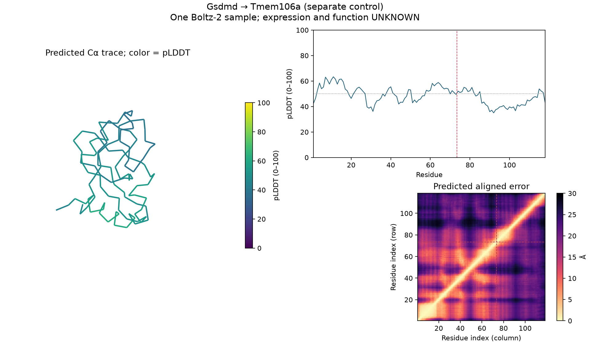
Structure coordinates (mmCIF) · Per-residue confidence (CSV) · PAE array (NPZ) · Confidence metadata and raw file hashes
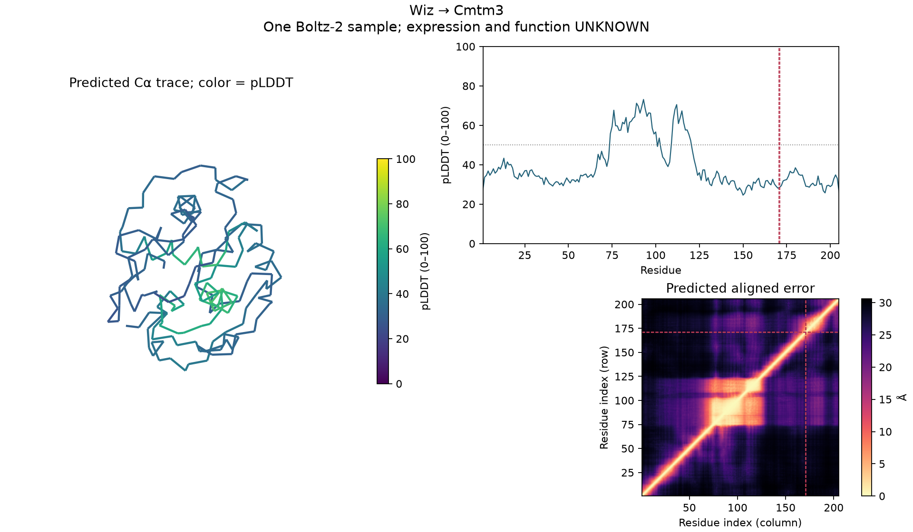
Structure coordinates (mmCIF) · Per-residue confidence (CSV) · PAE array (NPZ) · Confidence metadata and raw file hashes
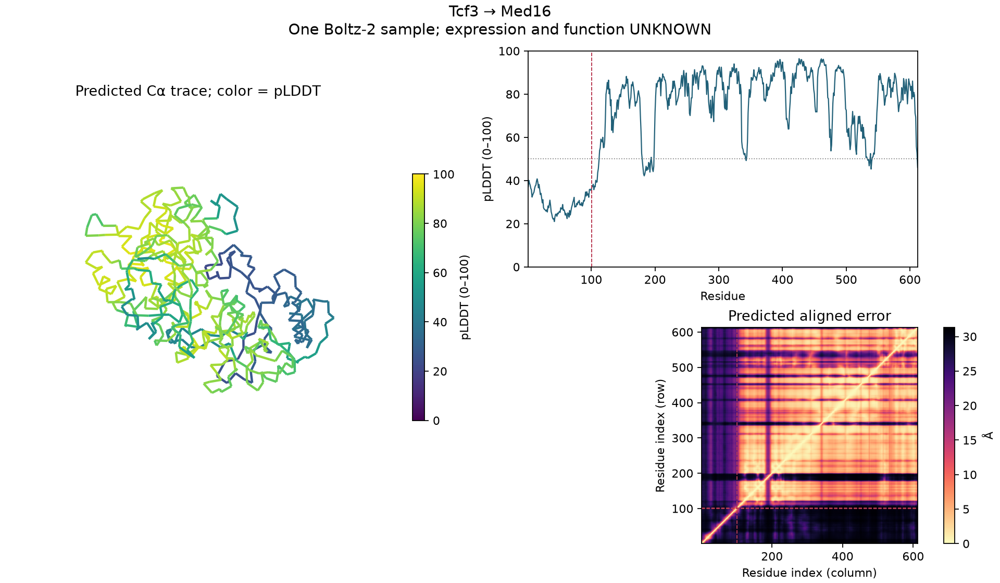
Structure coordinates (mmCIF) · Per-residue confidence (CSV) · PAE array (NPZ) · Confidence metadata and raw file hashes
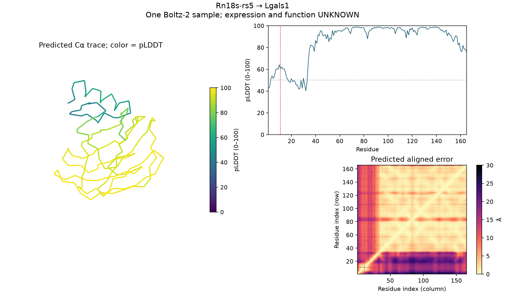
Structure coordinates (mmCIF) · Per-residue confidence (CSV) · PAE array (NPZ) · Confidence metadata and raw file hashes
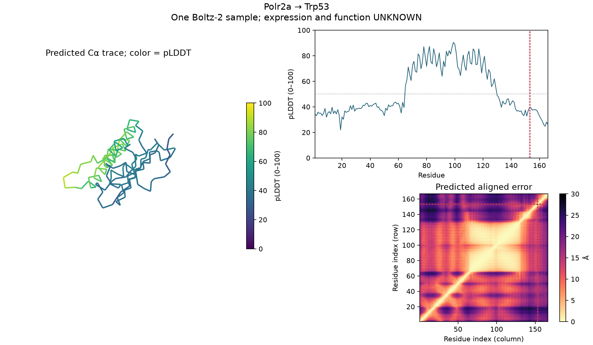
Structure coordinates (mmCIF) · Per-residue confidence (CSV) · PAE array (NPZ) · Confidence metadata and raw file hashes
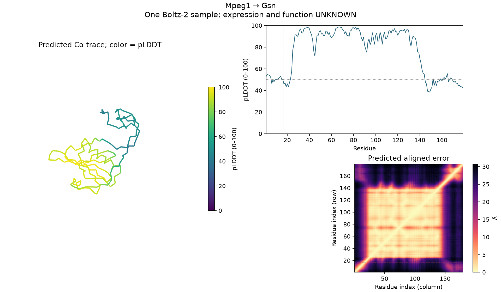
Structure coordinates (mmCIF) · Per-residue confidence (CSV) · PAE array (NPZ) · Confidence metadata and raw file hashes
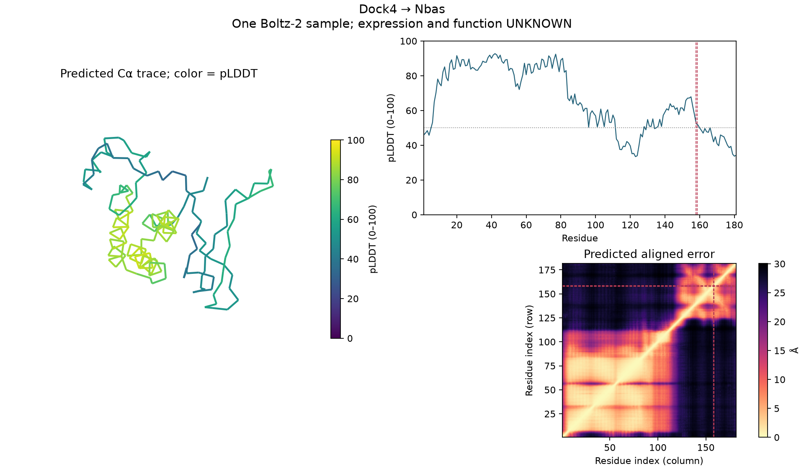
Structure coordinates (mmCIF) · Per-residue confidence (CSV) · PAE array (NPZ) · Confidence metadata and raw file hashes
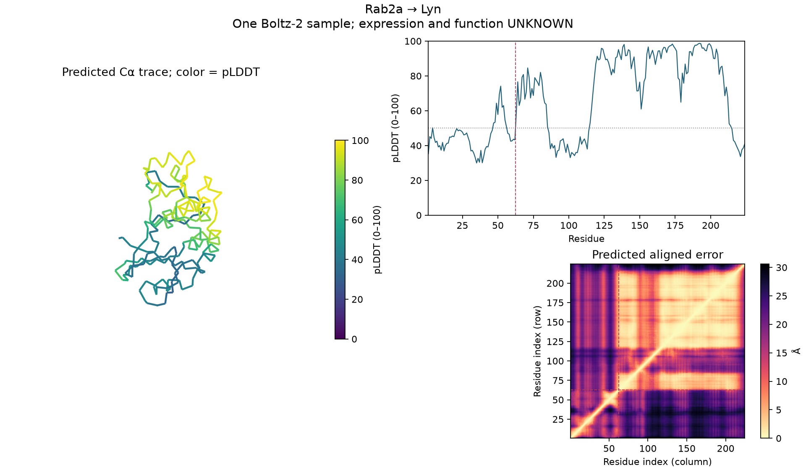
Structure coordinates (mmCIF) · Per-residue confidence (CSV) · PAE array (NPZ) · Confidence metadata and raw file hashes
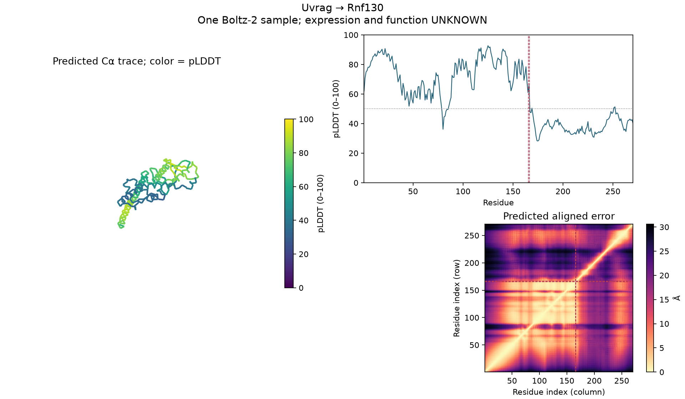
Structure coordinates (mmCIF) · Per-residue confidence (CSV) · PAE array (NPZ) · Confidence metadata and raw file hashes
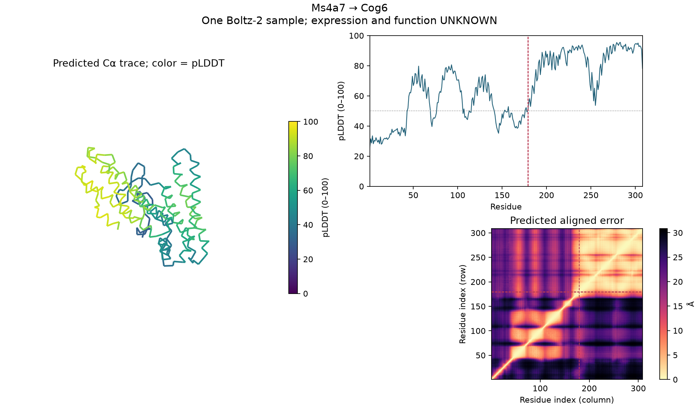
Structure coordinates (mmCIF) · Per-residue confidence (CSV) · PAE array (NPZ) · Confidence metadata and raw file hashes
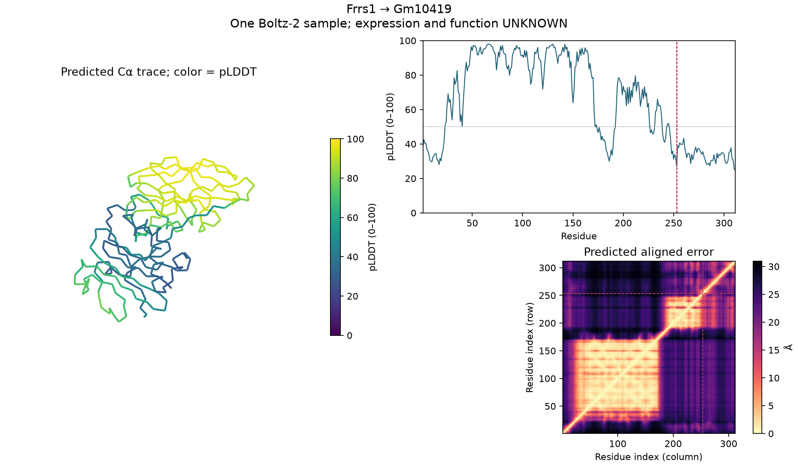
Observed lease intervals and maximum quoted regional compute/storage rates; conservative estimate, not a provider invoice. Provisioning through confirmed shutdown is charged in full. Persistent storage is included through this snapshot and may continue after workers stop. Costs before the first focused launch, taxes and unquoted network charges are not established here.
Resource durations, quoted rates and shutdown evidence
| Resource accounting item | Value |
|---|---|
| Snapshot UTC | 2026-09-19T16:54:55.365348+00:00 |
| Maximum quoted combined USD/hour | 3.6431 |
| Accounted compute/storage estimate (USD) | 2.42 |
| Temporary workers confirmed stopped | True |
| Shared controller available | True |
gpu storage diagnosis · gpu dependency diagnosis · gpu compiler diagnosis
Final requirement-by-requirement completion audit
Prespecified scientific rules · Frozen selection rules · Reproduction commands · Pre-result method hashes · Preserved discovery validation
Full-cohort processing, SG-NEx, JAFFAL/Genion integration, all-protein folding and model training are deferred. The mapping search is finite and proposals come from supplementary alignments; unmapped or soft-clipped reads are not exhaustively rescued. Reference assistance assumes alleles at low-quality discrepancies. NMD remains unknown without full transcript architecture. Structural confidence cannot establish expression or function. Published pair-level evidence cannot confirm an individual junction, read or sample. Independent human review has not been recorded.
Automated post-freeze review notes; no reranking · Explicit deferred-work ledger
{kind=link}
{kind=link}
{kind=link}
{kind=link}
{kind=link}
{kind=link}
{kind=link}
{kind=link}
{kind=link}
{kind=link}
{kind=link}
{kind=link}
{kind=link}
{kind=link}
{kind=link}
{kind=link}
{kind=link}
{kind=link}
{kind=link}
{kind=link}